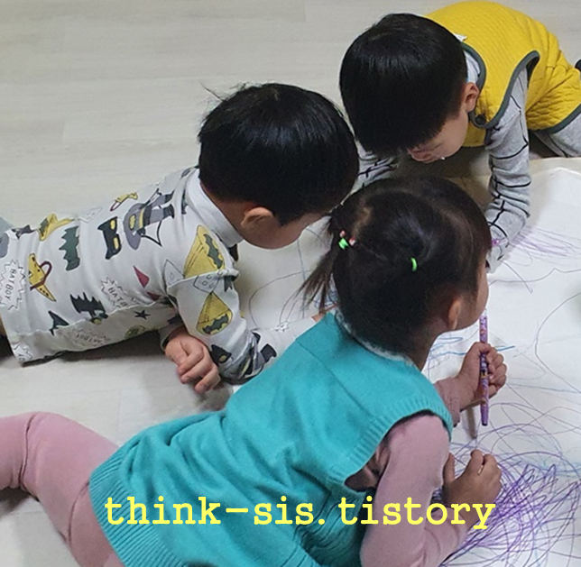
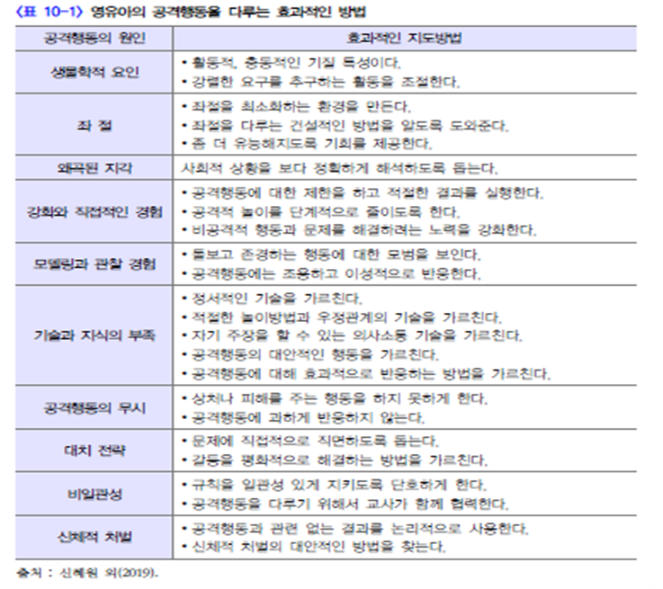
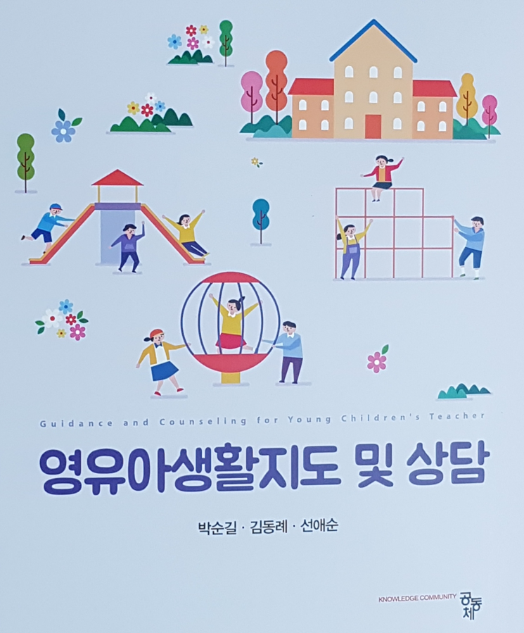

1. 화내는 문제 행동 의의 및 특성
3세의 경우 제1반항기로 독립심과 자아 의식이 발달하면서 스스로 자신의 감정을 통제하기 어렵다. 아이는 자신의 요구에 대한 언어 표현력이 부족하여 사소한일에도 화를 자주 나타낸다. 심할 경우 울고불고 야단법석을 떠는 행동을 한다.5세 정도가 되면 자기를 억제하는 힘이 생겨 남의 입장을 생각하여 통제를 할 수있다. 신체적으로 비타민이나 철분 부족, 피곤하거나 졸음이 오는 경우, 배가 고플때 그리고 환경적으로 잘못된 양육방법으로 양육되었던 경험을 화로 표출할 수있다. 화를 낼 때 파괴적인 행동을 동반한다면 위험할 가능성이 높으므로 특별한관심을 가져야 한다.

2. 지도 방법
① 가정환경의 분노 표출
양육자가 다투거나 화를 내는 모습을 자주 보이며 분노를 표출하는 모습을 흡수하여 강화된다. 큰 소리를 자주 내는 양육자의 충격적인 모습은 아이에게 모델링이 된다. 아이가 화를 자주 내는 경우에는 야단치기보다 화나는 감정에 공감하고 무엇이 아이를 화나게 했는지 이해해야 한다. 가능한 한 아이에게 화내는 모습을 보이지 않도록 한다. 화가 날 때 처리하는 방법, 화를 내는 방법 등에 대한 바람직한 대안을 가르쳐 준다.
② 감정조절의 자기통제력
아이가 화를 낼 때는 무시하고 화를 내지 않을 때 칭찬으로 강화해 주도록 한다. 감정상황을 조절하여 상호작용을 긍정적으로 하는 경우에는 칭찬을 하면서바람직한 행동을 일관되게 한다. 또래 친구의 아픔, 미안함, 두려움 등을 공감할수 있도록 한다. 아이가 공감적 이해를 받은 경우는 자신의 분노 감정을 자연스럽게 조절하고 또래 친구를 배려하게 된다.
③ 건강한 에너지로 발산
아이의 화를 말로 나타내거나 다른 방법으로 자신의 요구를 나타내도록 가르쳐준다. 소리치고 울면서 화를 낼 때는 가능한 한 관심을 주지 않고 무시한다. 아이에게 영양과 휴식 및 운동을 적절하게 제공하면 자연스럽게 화가 풀리기도 한다.신체적 긴장을 발산시킬 놀이를 제공하는 것도 좋다.
④ 생태학적 환경 고려
화를 내고 신경질을 부릴 때에는 내적인 면에, 혹은 외적인 면에 그 이유가 있다. 그러므로 아이의 건강에 주의하고 피로하지 않도록 해주며, 규칙적인 생활을
하게 하고, 조용한 환경을 만들어 안정감 및 휴식을 주도록 한다.
⑤ 자신감 있는 양육태도
아이의 부당한 요구를 들어주면 화내는 것이 습관화되므로 반드시 지켜야 하는 행동 규칙을 정하여 긍정적인 행동을 형성시킨다. 화를 내거나 신경질을 부려서 자기의 뜻을 관철시키려는 아이에게 말로 하거나, 다른 표현으로 나타내도록 가
르쳐 준다. 아이가 지나치게 흥분할 경우 일정 시간 격리하는 방법으로 다스린다. 만일 무리한 요구를 하는 경우에는 아무리 외치고 떠들고 울더라도 그대로 내버려둘 필요가 있다.
⑥ 못된 습관을 올바르게
화, 분노는 감정들 중에서도 가장 부정적인 감정으로 또래관계를 망가뜨릴 수 있다. 아이가 소리를 치고 떠들면서 울음으로 화를 나타내면 관심을 주지 않고 무시하고, 화를 말로 나타내거나 바람직한 다른 방법으로 나타내도록 지도한다.

박순길 외 공저(2021). 영유아생활지도 및 상담- 10장 부적응행동의 지도 방안 중에서
